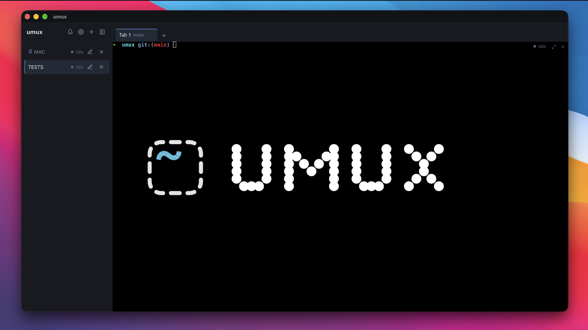
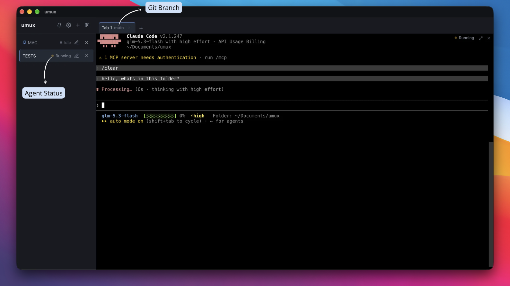
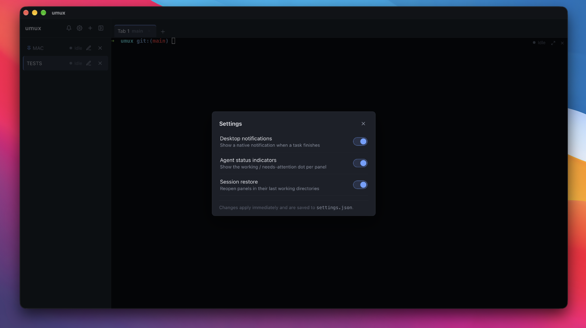

Terminal workspaces for Linux, Windows & macOS
Group your terminals into named workspaces, split them into as many resizable panels as you need, and get a desktop notification the moment your AI CLI finishes a long-running task.


umuxGroup your terminals into named workspaces, split them into as many resizable panels as you need, and get a desktop notification the moment your AI CLI finishes a long-running task.

One workspace per project, tabs inside it, and any tab splits into as many resizable panels as you need — with a minimum size enforced so nothing collapses. Workspaces persist across restarts and can be pinned to stay on top.

umux reads the standard OSC completion signals emitted by AI CLIs (Claude Code, Codex, Gemini CLI, Aider…) and fires a native desktop notification when a long-running task finishes. Each panel shows a live agent status — working, needs-attention, idle — detected from escape sequences and process names, never from your terminal content.

Close the app, come back tomorrow: your workspaces, tabs and panel layouts are restored exactly as you left them.
Prefer the terminal? This drops the umux command-line tool into ~/.local/bin — it reads and writes the same store as the desktop app.
curl -fsSL https://raw.githubusercontent.com/CrystalPlatforms/umux/main/install.sh | shmacOS and Linux (x86_64). Look before you leap: append -- --dry-run to preview what it would do. The desktop installers already carry the CLI too — details in the README.
umux is free & open source and ships without a paid code-signing certificate, so your system may ask for confirmation once:
chmod +x once; .deb/.rpm install normally.